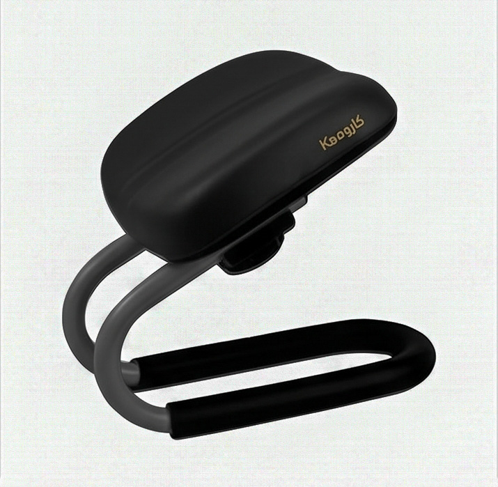
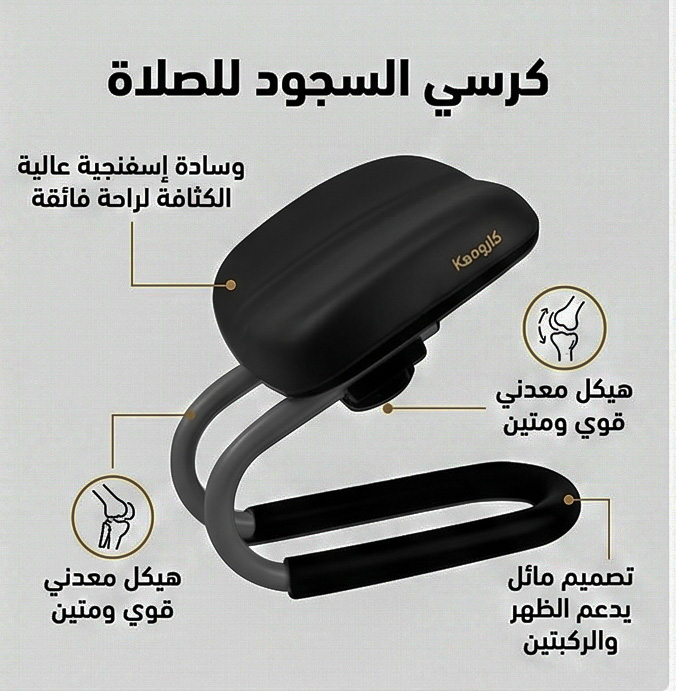
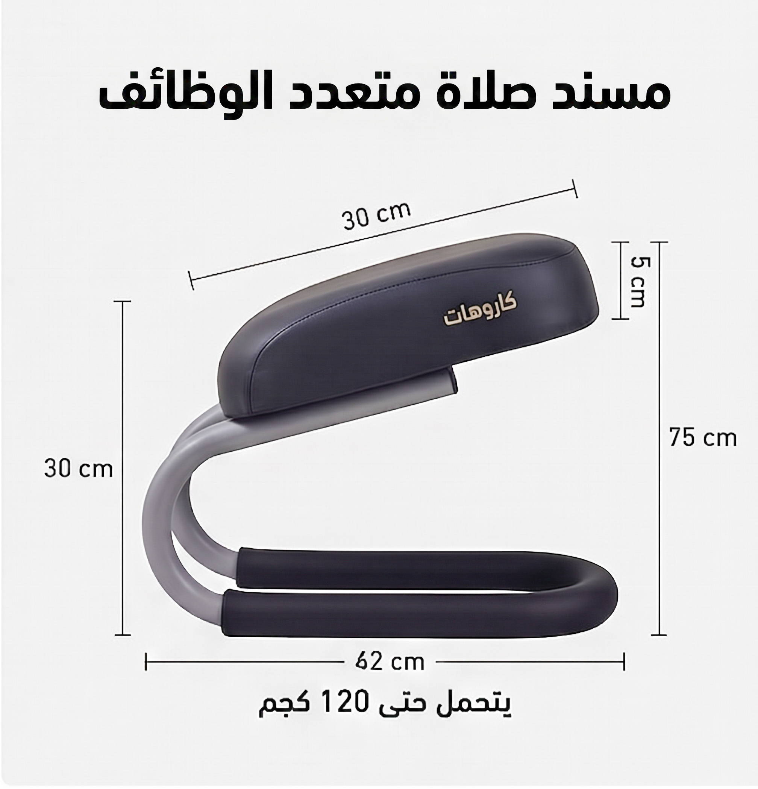

صلِّ واسجد براحة من غير ألم في الركبتين أو الظهرتصميم مدروس يخليك تخشع في صلاتك من غير ما تفكّر في أي وجع

وسادة إسفنجية عالية الكثافة + هيكل معدني يدوم سنينكل تفصيلة متصمّمة تدعم ظهرك وركبتيك أثناء السجود

مقاس عملي يناسب الكبار ويتحمل حتى 120 كجم62×30 سم وارتفاع 75 سم — خفيف وقابل للطي تاخده معاك في أي مكان
تصميم مريح يساعدك على أداء الصلاة براحة أكبر — مثالي للمنزل والسفر.
الدفع عند الاستلام متاح · منتج أصلي 100%